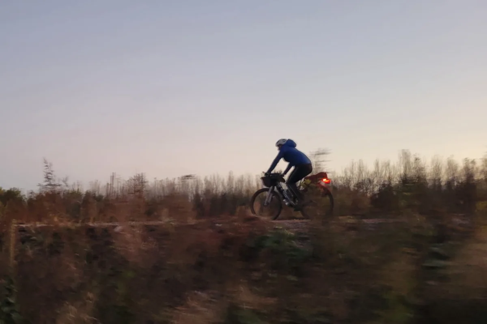
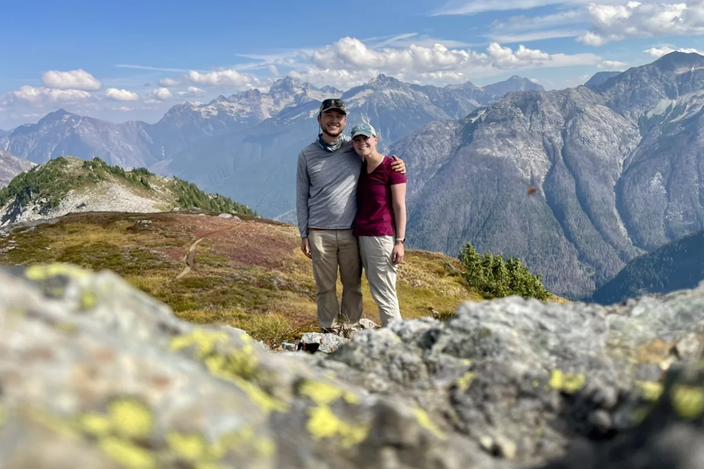
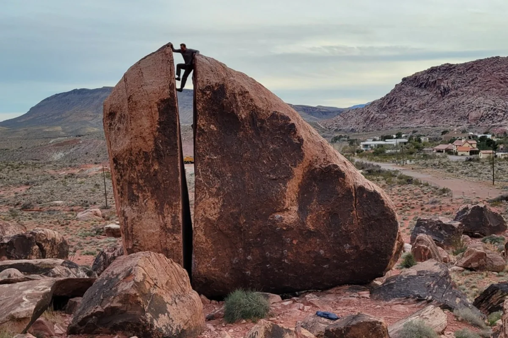
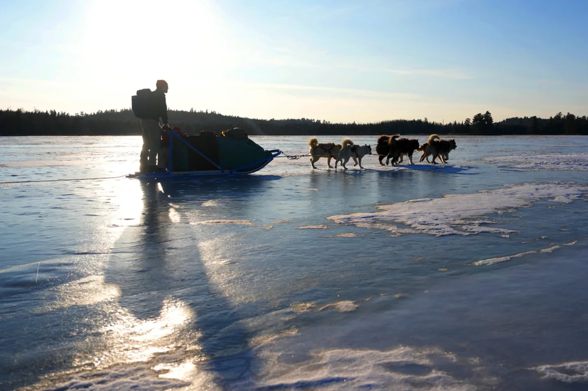
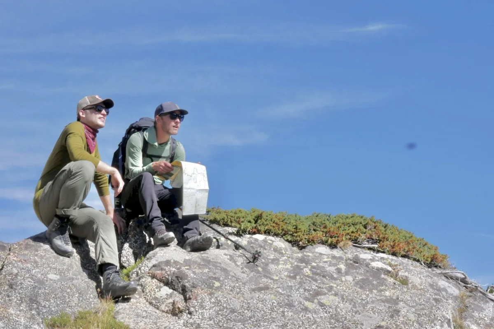
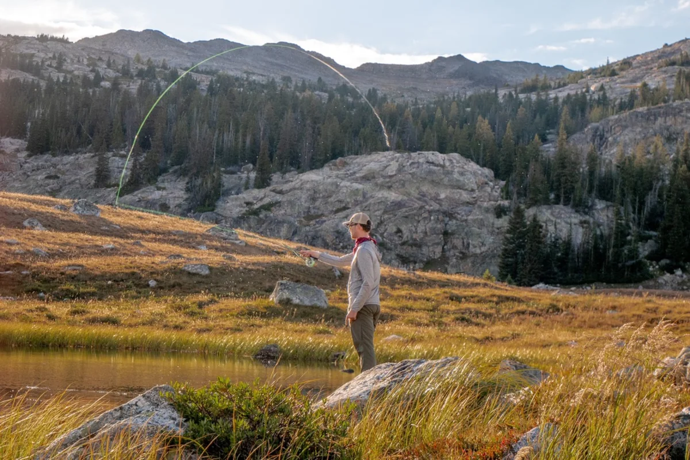

Howdy!
I’m a Minneapolis-based cartographer and data journalist on the graphics team at the Minnesota Star Tribune, the author of The Twin Cities in 50 Maps and an editor for the Atlas of Design.
What I do
Transform data into visual stories that illuminate and inspire, and solve complex geospatial problems along the way. I occasionally take on freelance commissions.
What I make
Thoughtfully designed maps and data visualizations for the news, the web, the bookshelf and the trailhead. My work explores hidden systems, dramatic landscapes, outdoor adventures and the changing climate.

The Twin Cities in 50 Maps
Stories of glaciers and gangsters; epic floods and titans of industry; Native people and immigrants from every corner of the globe. The maps in this book bridge the past and present and even offer glimpses at the future. Whether you’ve lived in the Twin Cities your whole life or only just arrived, it will show you a new way to see your home.
Preorder the bookAbout me
I came to cartography through journalism. I studied journalism at the University of Minnesota, reported in Tucson for Arizona Public Media and joined the News21 investigative team before earning a master’s in cartography and GIS at UW–Madison, where my thesis asked 17 news cartographers about the ethics of their work.
After a stint on the graphics desk at The Wall Street Journal, I joined the Minnesota Star Tribune in 2023. When I’m not mapping, you might find me biking, rock climbing or fly fishing — usually with Juneau, an American dingo.





